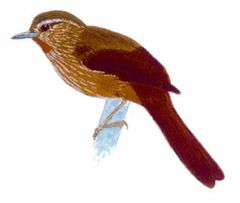
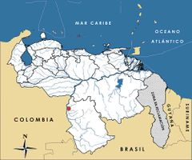

Thripophaga cherriei
| Rabiblando del Orinoco | |
|---|---|
|  | |
| Riesgo de extinción | |
 Vulnerable (UICN) | |
| Clasificación científica | |
| Reino: | Animalia |
| Filo: | Chordata |
| Clase: | Aves |
| Orden: | Passeriformes |
| Familia: | Furnariidae |
| Género: | Thripophaga |
| Especie: | Thripophaga cherriei |
| Nombre binomial | |
|
Thripophaga cherriei Berlepsch et Hartert, 1902 | |
| Distribución | |
|
 Mapa de distribución de Thripophaga cherriei | |
Contenido
Información de Evaluación
- Categoría y Criterio Regional: Vulnerable D1+2
- Fecha de Evaluación Regional: 2015
- Evaluadores: Jesús Morales-Campos y Ariany García-Rawlins
- Categoría y Criterio Global: Vulnerable D1+2
Justificación
Evaluaciones Previas
1999: Vulnerable (VU)
2008: Vulnerable (VU)
Información General
Nombres comunes
Rabiblando del Orinoco, canastero del Orinoco, colasuave del Orinoco, Orinoco softtail.
Notas taxonómicas
Sinónimos
Descripción
Ave de tamaño pequeño que mide entre unos 16 y 17 cm de longitud. Los colores de su plumaje son uniformes y crípticos. La parte dorsal es parda olivácea con tintes rojizos. Posee una línea estrecha de color crema sobre los ojos. Alas y cola son de color castaño rojizo, y en la parte superior de la garganta tiene una mancha conspicua de color anaranjado brillante. En el rostro destacan sus ojos de color rojo oscuro. Se le denomina «rabiblando» porque carece de las pequeñas espinas al final de la cola, lo que caracteriza a otras especies de la misma familia (Phelps Jr. y Meyer de Schauensee 1979, Hilty y Brown 1986, Collar et al. 1992, Restall et al. 2007, Remsen Jr. y Sharpe 2015a).
Distribución
Thripophaga cherriei está restringida a una pequeña área del Alto Orinoco en la frontera de Venezuela y Colombia hasta hace muy poco considerada endémica de nuestro país. Su distribución se localiza en las selvas pluviales y desmontes aledaños a los caños Capuana y la Grulla, dos pequeños afluentes del río Orinoco en su parte alta, ubicado en el estado Amazonas (Phelps Jr. y Meyer de Schauensee 1979, Collar et al. 1992); en tiempo reciente se ha registrado al otro lado de la frontera, en Inírida, Guainía, Colombia (Remsen Jr. y Sharpe 2015a). La taxonomía de Thripophaga cherriei aún no es clara, y entre las otras tres especies conocidas del género se le considera cercana a T. macroura, de la costa sureste de Brasil, ambas emparentadas con el género Asthenes (Restall et al. 2007, Remsen Jr. y Sharpe 2015a).
- Sistema: Terrestre, Dulceacuícola
- Bioregión:
- Intervalo altitudinal (m): 100
- Endémica: Sí
Situación
Se conoce muy poco sobre esta especie, por lo que resulta difícil determinar su situación actual. Su distribución conocida es en extremo pequeña, estimada en 10 km2 en Venezuela y pocas decenas de kilómetros cuadrados en total (Remsen Jr. y Sharpe 2015a), aunque es probable que sea algo mayor que la señalada (BirdLife International 2000, BirdLife International 2015). Por su distribución restringida y por sus registros escasos, es necesario considerarla entre las especies que requieren atención especial. Hasta 2006 solo se conocían algunos ejemplares colectados: uno en febrero de 1890, una pareja en febrero de 1899, entre 4 y 23 individuos registrados entre marzo y abril de 1970 (con informes pocos claros), una observación de tres ejemplares en 1999 y, finalmente, un reporte no confirmado de una pareja en 2002. A partir de 2006, una serie de expediciones ha logrado estudiar la especie en vida. En el ámbito global ha sido clasificada en la categoría Vulnerable (BirdLife International 2015).
- EOO (km2): 10
- AOO (km2): <20
- Tendencia Poblacional: Decreciendo
Amenazas
La agricultura itinerante (conucos) es una amenaza potencial, pero se desconoce si esa práctica está afectando a Thripophaga cherriei (BirdLife International 2000). La cercanía de Puerto Ayacucho, a 150 km al norte de la localidad tipo, y el principal centro de desarrollo de la Amazonía venezolana, podrían influir en el deterioro de las selvas ribereñas de las cuales la especie parece ser especialista (Collar et al. 1992). De igual forma, su distribución abarca a la Reserva Forestal del Sipapo, área que eventualmente podría estar sujeta a la extracción de madera (Restall et al. 2007). Otras especies relacionadas son bastante sensibles al deterioro, destrucción y fragmentación de los bosques (Rodríguez, J. P. y Rojas-Suárez 2003).
Conservación
Su hábitat es parte de un Área de Importancia para la Conservación de las Aves (Lentino et al. 2005). Su distribución geográfica conocida se encuentra incluida en la Reserva Forestal del Sipapo, aunque es dudosa su efectividad en cuanto a la protección de los bosques ribereños. Se recomienda realizar un reconocimiento de campo apoyado en la grabación de sus vocalizaciones para la localización de sus poblaciones, sobre todo en la distribución conocida y en los ecosistemas similares cercanos al área. Futuras investigaciones deben dar prioridad a la estimación de tamaños poblacionales, la determinación de sus posibles amenazas y el estudio de sus requerimientos ecológicos. Si se demuestra que la especie está restringida a un área tan limitada, la protección de su hábitat de cualquier intervención sería de importancia suprema.
Autorías
Autores originales
Christopher J. Sharpe
Colaboradores
Ilustrador
Robin Restall
Referencias
- BirdLife International (2000). Threatened Birds of the World. The official source for birds on the IUCN Red List. Lynx Edicions. Barcelona, España. 864 pp.
- BirdLife International. (2015). IUCN Red List for birds. Disponible en www.birdlife.org, consultada el 08/07/2015.
- Collar, N. J., Gonzaga, L. P., Krabbe, K., Nieto, A. M., Naranjo, L. G., Parker III, T. A. y Wege, D. C. (1992). Threatened Birds of the Americas. The ICBP/IUCN Red Data Book (3rd ed. part 2). International Council for Bird Preservation. Cambridge. 1150 pp.* Krabbe, N. K., Schulenberg, T. S. y Sharpe, C. J. (2015a). Great Antpitta (Grallaria excelsa). En: del Hoyo, J., Elliott, A., Sargatal, J., Christie, D. A. y de Juana, E. (Eds.). Handbook of the Birds of the World Alive. Lynx Edicions. Barcelona. (Descargado de www.hbw.com/node/56881, el 09/07/2015).
- Hilty, S. L. y Brown, W. L. (1986). A Guide to the Birds of Colombia. Princeton University Press. 836 pp.
- Lentino, M., Esclasans, D. y Medina, F. (2005). Áreas importantes para la conservación de las aves en Venezuela. Páginas: 621-730. En: BirdLife International y Conservation International (Eds.). Áreas importantes para la Conservación de las aves en los Andes tropicales: sitios prioritarios para la conservación de la biodiversidad. BirdLife International (Serie de conservación de BirdLife No. 14) & Soc. Audubon de Venezuela, Caracas. Quito, Ecuador.
- Phelps Jr., W. H. y Meyer de Schauensee, R. (1979). Una guía de las Aves de Venezuela. Gráficas Armitano. Caracas. 484 pp.
- Remsen Jr., J. V. y Sharpe, C. J. (2015a). Orinoco Softtail (Thripophaga cherriei). En: del Hoyo, J., Elliott, A., Sargatal, J., Christie, D. A. y de Juana, E. (Eds.). Handbook of the Birds of the World Alive. Lynx Edicions. Barcelona. (Descargado de www.hbw.com/node/56485, el 16/07/2015).
- Restall, R., Rodner, C. y Lentino, M. (2007). Birds of Northern South America, an Identification Guide. Volume 1: Species Accounts. Volume 2: Plates and Maps. Yale University Press. New Haven, USA and London, UK. 880 pp.
- Rodríguez, J. P. y Rojas-Suárez, F. (1999). Libro Rojo de la Fauna Venezolana, segunda edición. PROVITA, Fundación Polar. Caracas. 444 pp.
- Rodríguez, J. P. y Rojas-Suárez, F. (2003). Libro Rojo de la Fauna Venezolana (2a ed. reim.). Provita, Fundación Polar. Caracas. 472 pp.
- Rodríguez, J. P. y Rojas-Suárez, F. (Eds.) (2008). Libro Rojo de la Fauna Venezolana, tercera edición. Provita y Shell Venezuela, S. A. Caracas, Venezuela. 364 pp.
- Sharpe, C. J. (2015). Rabiblando del Orinoco, Thripophaga cherriei. En: J.P. Rodríguez, A. García-Rawlins y F. Rojas-Suárez (eds.) Libro Rojo de la Fauna Venezolana. Cuarta edición. Provita y Fundación Empresas Polar, Caracas, Venezuela. Recuperado de: animalesamenazados.provita.org.ve/content/rabiblando-del-orinoco Jue, 12/04/2018 - 09:18